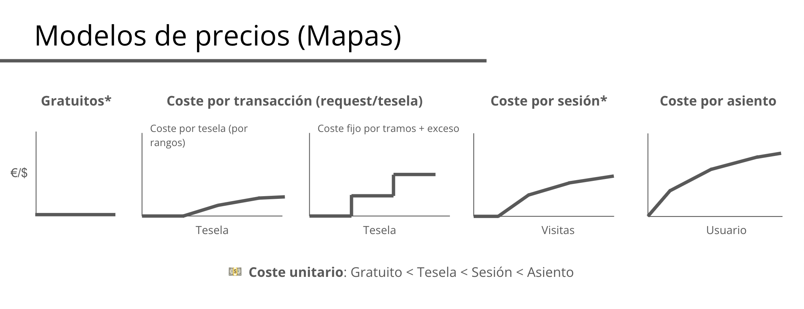
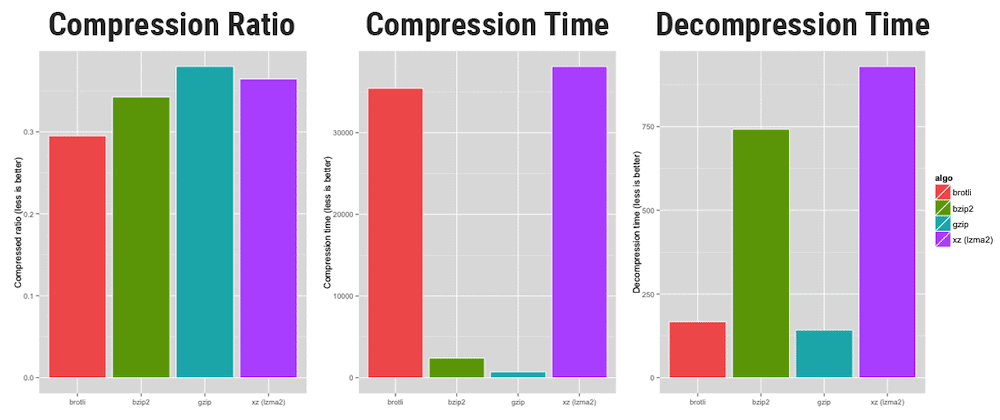
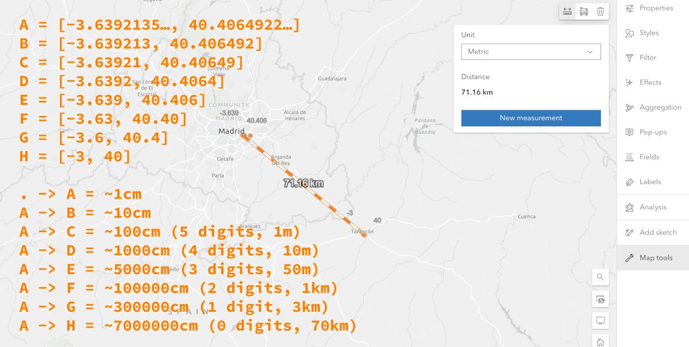
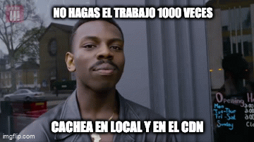
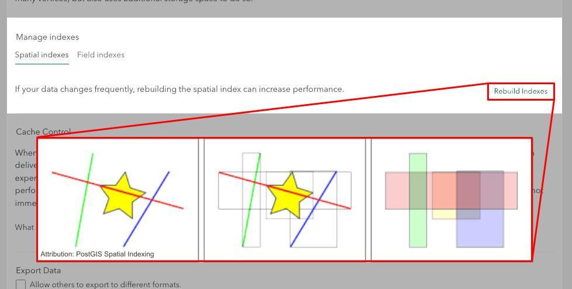
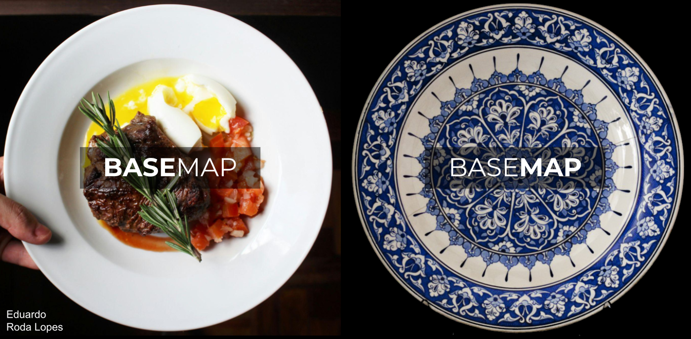
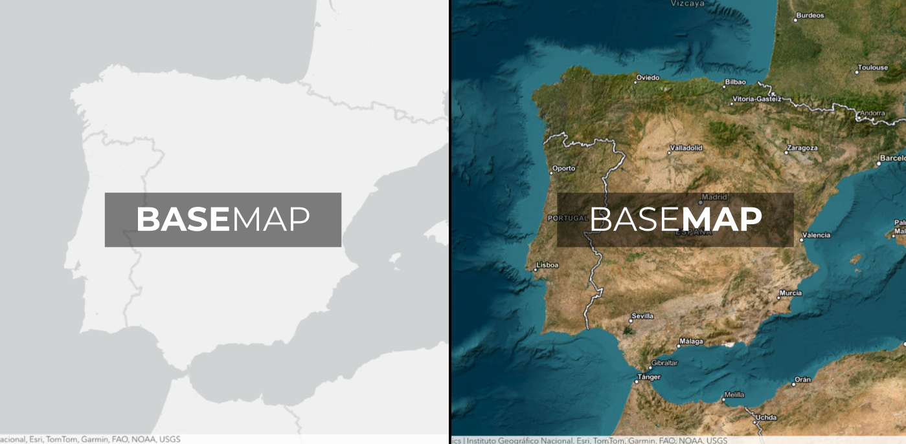

Técnicas de optimización para visualización en mapas 🗺️
Raúl Jiménez Ortega | @hhkaos
Raúl Jiménez Ortega | @hhkaos
¿Qué podemos optimizar?
1. Tiempos de carga inicial

2. Fluidez de la interacción

3. Costes
Modelos de precios de mapas base
TECNOLOGÍAS
Estado del arte
Mapas estáticos
{kind=link}
Mapas dinámicos
{kind=link}
Mapas interactivos
Mapas inmersivos
TIEMPOS DE CARGA
Optimizando datasets de cientos de miles o millones de datos y tiempos de respuesta del servidor
Reduce los bytes enviados por la red
Ratio, tiempo de compresión y descompresión por algoritmo | Fuente: OpenCPU
GeoJSON estándard (RFC 7946)
{kind=link}
Reduce el tamaño del dataset
Relación entre el número de decimales de una coordenada y la precisión
Polígonos o líneas
{kind=link}
Trocea los datos
Cachea, cachea, cachea!

Crea índices espaciales
FLUIDEZ DE LA INTERACCIÓN
- Agrupación = Clustering 🔍
- Mapas de calor = Heatmaps 🔥
- “Contenerización” = Binning 📦
- Análisis en cliente = Client-side analysis 📏📐
Clustering 🔍
Heatmaps 🔥
Binning 📦
Haz todo lo que puedas en cliente
COSTES
Open data
Dataviz
Dataviz
CONCLUSIONES
¿Cuál es la mejor tecnología?
¿Cuál es la mejor tecnología?
Depende del caso de uso, y de las necesidades:
- 🎨 De diseño / personalización
- 🤏 De interacción
- 📦 De los tipos de datos
- 📱 De los dispositivos
- ⏱️ De tiempos de carga
- 🧑🦽 De accesibilidad
- …